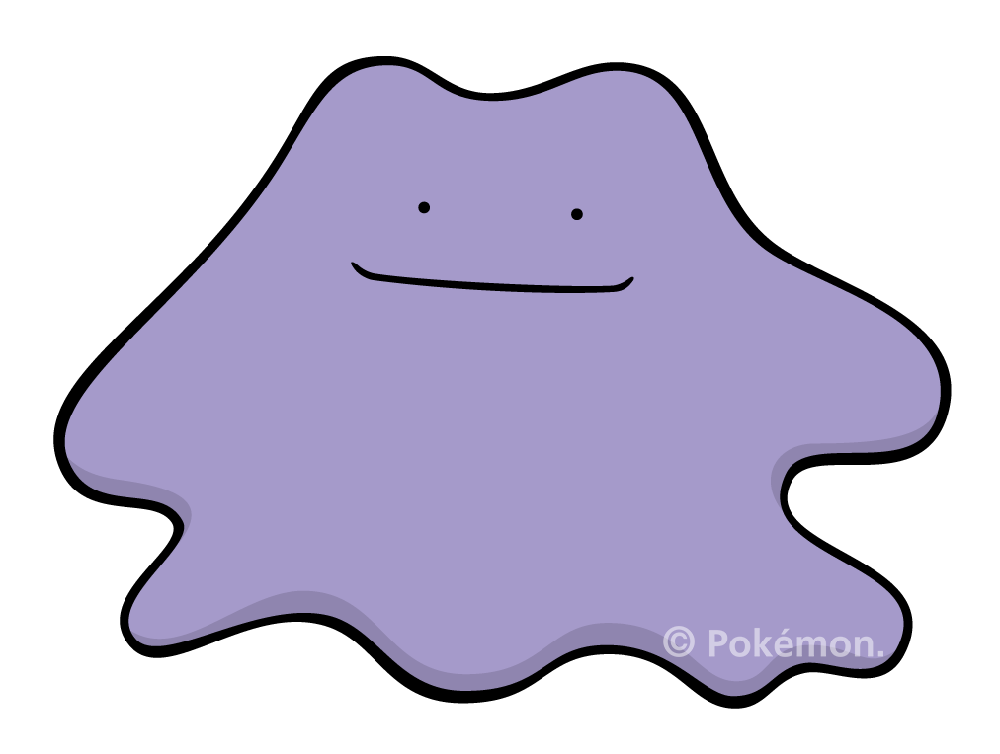

ポケモン -Pokemon-
レイアウトからお気づきかもしれませんが、ポケモンがすごく好きです。
ゲーム、アニメ、キャラクターどれも好きでグッズもよく買います。
下のモンスターボールから好きなポケモンを選んでクリックしてみてください。

- たねポケモン
001 フシギダネ - とかげポケモン
004 ヒトカゲ - かめのこポケモン
007 ゼニガメ

お笑い -Comedy-
お笑いを見るのがすごく好きで、休みの日はテレビやYouTubeを観て過ごしています。
好きなお笑い芸人は、ハライチ、オードリー、霜降り明星、ジャルジャルです。
他にもたくさんいますのでぜひおすすめの芸人を聞いてください。
下に好きなコントを張っておきます。
サッカー -Soccer-
好きなスポーツはサッカーで、観るのもやるのも好きです。
ガンバ大阪というチームを応援していて、特に遠藤保仁選手が好きです。
あまり多くはありませんが、スタジアムに足を運ぶこともあります。
下の動画は遠藤選手のお気に入りのプレーシーンです。
旅行 -Trip-
旅行が好きでよくガイドブックや旅行サイトを眺めています。
小学生の時に立てた将来の夢が「海外旅行に行く」ですが、
まだ叶えられていないので近いうちに叶えられたなと思っています。
下のスライドショーは愛媛・広島へ旅行に行った時の写真です。